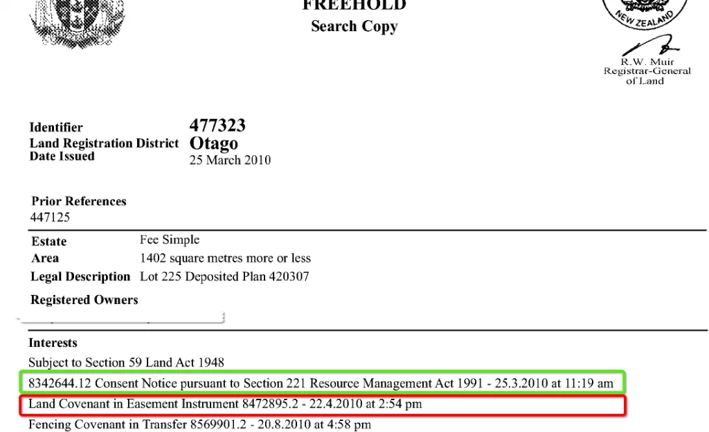
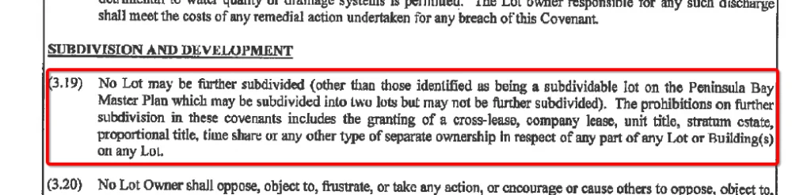

We are regularly approached by Queenstown and Wanaka property owners (and potential purchasers) asking if and how they can subdivide their property. The new Queenstown Lakes District Plan has changed to allow a higher level of subdivision in many areas, especially residential zones, compared to the old rules. This means that in many cases, properties that were previously not able to be subdivided are now eligible.
This guide provides a high-level and simplified overview of the subdivision process, and what you need to do to split off that piece of paradise.
Step 1: Do Your Background Research
Covenant and Consent Notice Restrictions
First, check whether there are any restrictions on the title of your property that would prevent subdivision. Your lawyer can assist with this, but as a first step, check the wording of any covenants or consent notices registered as interests on your title.
Titles may show a consent notice (restrictions specific to the property which the Council has control over) and a land covenant (usually between private parties, such as a developer and property owner). If you do not have these documents, you can order them from Land Information NZ.
If a covenant contains a clause preventing further subdivision, obtain advice from a lawyer to determine whether those restrictions can be bypassed. If there is a condition regarding subdivision on a consent notice (which relates to the Council), it may be possible to apply to remove this condition as part of the subdivision application.
The District Plan Rules
The District Plan contains the core of the Council's rules regarding subdivision of land. We will be honest: it is complex. There are rules specifying minimum lot sizes once subdivided, but there are also many other rules that are very much property-specific and depend on the Planning Zone.
Many zones do not have a minimum lot size, meaning there is often no clear "yes" or "no" answer to whether you can subdivide. This is why it is so important to get up-front advice specific to your property.

Step 2: Plan the Subdivision
The next step is to plan out the subdivision. Where will the new boundary or boundaries go? How will the lots be accessed? Will water supply, wastewater drainage, and electricity need to be extended?
You do not need to engage a surveyor to start thinking about this. Print out a map of your property using the Council's free mapping tool, get outside, and start sketching where things could go. Your initial sketches will help us provide free advice on the subdivision layout, including:
- Whether the lot sizes will meet the District Plan requirements
- Access width requirements
- What Council services are available (water supply, wastewater, stormwater)
- Likely physical works you will need to undertake (new access, services)
Can You Subdivide Your Property?
Fill in your address and we will get back to you with a free high-level overview of the subdivision rules for your specific site within 24 hours.
Step 3: Get the Specialists On Board
The next step is to engage a surveyor to prepare a scheme plan of the subdivision. The surveyor will visit the property, undertake a survey, and prepare a basic electronic plan of the subdivision needed for the resource consent application. We have established relationships with the best surveyors in the District and will assist you in getting this step right.
Depending on the circumstances, other specialists may be needed: a Geotechnical Engineer for natural hazard reports, a Traffic Engineer for access and parking issues, or a Landscape Architect for sensitive locations. We would normally liaise with all these parties on your behalf.
Step 4: Resource Consent
With a scheme plan, services and access plan, and specialist reports ready, we are ready to apply to QLDC for the subdivision resource consent.
Every resource consent application requires, as a minimum:
- A detailed description of the site and proposed subdivision, including services and access.
- A detailed assessment of effects on the environment, presenting a strong argument that the subdivision is appropriate and avoids significant adverse effects.
- A strong argument that neighbours and other entities are either unaffected, or that their approval has been obtained.
- A robust assessment against the Objectives and Policies of both the Operative and Proposed District Plans.
- An assessment against the relevant sections of the Resource Management Act.
- All supporting technical reports and plans.
- Confirmation from utility providers that they can extend their networks to service the new lot.
Preparing a resource consent application typically takes around 2 weeks from when all supporting information is available. We then submit to Council, where a Council Planner will be allocated and will seek input from specialists. Council may request further information. As a best case, Council will take 20 working days to process and grant consent. In general, we advise 6 to 8 weeks for a fairly standard subdivision.
Once Council is ready to grant consent, we have the opportunity to review the draft conditions. This is an important step: we carefully consider all conditions, explain them to you, and negotiate with Council if necessary.

Step 5: Complete Physical Works and Survey
With resource consent granted, the next step is to fulfil the conditions. This could include:
- Completing earthworks in a responsible and environmentally-friendly manner
- Building access (a driveway or road)
- Installing services: water, electricity, telecommunications, stormwater, wastewater
- Undertaking any required landscaping
Prior to physical works, the detailed design must be assessed by Council's Engineers through "Engineering Acceptance": Council's Resource Management Engineers confirm the detailed design complies with QLDC's Land Development and Subdivision Code of Practice.
Also during this time, the surveyor prepares more detailed subdivision plans in accordance with what was approved and applies to Council for Section 223 survey plan approval. This is where Council checks the boundaries, areas, and any easements, amalgamations, and covenants that need to be prepared. Think of Section 223 as Council signing off the refined legal and survey work, without requiring physical works to be complete.
Step 6: Sign-Off and Development Contribution Payment
With physical works complete and the survey plan work done, we apply to Council for the Section 224(c) certificate. This is the final certification that all conditions of the subdivision consent have been complied with.
Council will check that all conditions have been met: this includes a QLDC subdivision inspector visiting the property to inspect physical works, confirmation from power and telecom companies that services are installed to their standards, "as-built" plans supplied to Council for their infrastructure records, and confirmation that any required covenants or consent notices have been prepared by a lawyer and are ready to be registered on the new titles.
It is highly likely that you will also need to pay the Council a Development Contribution at this stage. As a high-level ballpark, anticipate a development contribution of around $20,000 to $35,000 for a residential area subdivision creating one additional lot. The exact amount varies depending on location.
Once the contribution is paid and Council is satisfied all conditions are met, they will issue the Section 224(c) certificate: Council's confirmation that you can take this to the Government and finalise the subdivision.
Step 7: Apply to the NZ Government for the New Titles
With both the Section 223 and Section 224(c) certifications from QLDC, we can apply to Land Information New Zealand (LINZ) to have the new titles issued. This step is completed by the surveyor and lawyer. Once done, you will be sent copies of the new titles.
It often takes time for Council and LINZ to update their systems, allocate street addresses, and generate a property number for rates purposes. However, once you have the title, it can be legally sold or transferred as its own independent property.
Step 8: You're Done
That is a high-level overview of the process for subdivision in New Zealand, particularly in the Queenstown Lakes District. We have gone from a sketch on a napkin to a newly-issued second title for your subdivided property.
Frequently Asked Questions
As a rough estimate for a relatively straightforward subdivision, total costs are typically $50,000 to $100,000 or more. This includes application fees, professional services (planning consultant, surveyor, engineers), physical works, Land Information NZ fees, and the Council development contribution. Subdividing around an existing dwelling is usually less expensive than creating a new vacant lot.
A development contribution is a one-off payment to QLDC to help fund infrastructure upgrades created by the new lot. As a high-level ballpark, anticipate $20,000 to $35,000 for a residential area subdivision creating one additional lot. The exact amount depends on location and specific circumstances. QLDC provides a free estimate calculator on their website.
It depends on your zone and the practical feasibility of the subdivision. Some zones have no specified minimum lot size, meaning the Council has full discretion. Up-front advice specific to your property is essential before assuming what is possible.
Yes, but it is almost never a straightforward refusal without opportunity to respond. You always have the opportunity to address concerns raised by Council, or to pursue notification of a resource consent application where the decision is made by an Independent Commissioner. The number of subdivision applications declined by QLDC is very small compared to the number granted.
For a straightforward subdivision, assume around 10 to 14 months from initial concept to new titles. This includes background research, engaging specialists, obtaining resource consent (typically 6 to 8 weeks processing), completing physical works, engineering acceptance, Section 223 approval, Section 224(c) sign-off, development contribution payment, and LINZ title registration.
Yes. Before proceeding, check whether any covenants or consent notices on your title contain restrictions preventing further subdivision. Your lawyer can assist. Consent notices (Council-controlled) may be removable as part of the subdivision application. Land covenants between private parties may require legal advice to determine if they can be bypassed.
A Section 223 certification is Council's approval of the detailed survey plan, confirming boundaries, areas, easements, and covenants are in order. Physical works do not need to be complete at this stage. A Section 224(c) certificate is the final certification that all conditions of consent have been complied with, including all physical works. Once issued, the subdivision can be registered with LINZ and new titles issued.
Normally yes. However, with the way the District Plan rules are structured, it is often possible to create smaller lots if a dwelling is already constructed on the new lot and you are subdividing it off. Whether you create a vacant lot or a lot with an existing dwelling depends on your specific circumstances and objectives.
Find Out if You Can Subdivide
Free complexity score for your specific site. We'll get back to you within 24 hours.